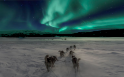

Seja muito bem vindo.
Melhores Raças de Cachorro
- Labrador Retriever
- Pastor Alemão
- Bulldog Francês
- Retriever
- Poodle
- Beagle
- Dachshund (Teckel)
- -Boxer
- Yorkshire Terrier
- Border Collie
Guia para Escolher o Companheiro Canino Ideal!
A raça ideal de cachorro é uma decisão importante que deve levar em consideração diversos fatores para garantir que o cão se adapte bem ao seu estilo de vida e necessidades. Aqui estão algumas orientações para ajudar nesse processo:
Tamanho e Espaço:O espaço disponível em sua casa. Raças maiores, como o Labrador Retriever e o Pastor Alemão, precisam de mais espaço para se movimentar, enquanto raças menores, como o Poodle Toy ou o Chihuahua, podem se adaptar melhor a apartamentos.
Nível de Atividade:Pense no seu próprio nível de atividade. Algumas raças, como o Border Collie e o Jack Russell Terrier, são muito ativas e precisam de exercícios diários intensos. Se você não tem muito tempo para atividades físicas, considere raças menos exigentes nesse aspecto, como o Bulldog Francês ou o Basset Hound.
Temperamento:Cada raça tem seu próprio temperamento característico. Algumas são mais dóceis e amigáveis com crianças e estranhos, como o Golden Retriever e o Labrador, enquanto outras podem ser mais reservadas ou protetoras, como o Pastor Alemão e o Rottweiler. Pesquise sobre o temperamento da raça para garantir que combine com seu estilo de vida e personalidade.
Necessidades de Cuidado:Considere o tempo e os recursos que você pode dedicar aos cuidados do seu cachorro. Algumas raças, como o Poodle e o Yorkshire Terrier, exigem cuidados frequentes com a pelagem, enquanto outras, como o Bulldog Inglês, podem necessitar de mais cuidados com a saúde devido às características de sua anatomia.
Alergias:Sealguém na sua casa tem alergia a pelos de animais, considere raças hipoalergênicas, como o Poodle, o Bichon Frisé ou o Schnauzer.
Treinabilidade:Algumas raças são mais fáceis de treinar do que outras. Raças como o Border Collie e o Pastor Alemão são altamente inteligentes e respondem bem ao treinamento, enquanto outras, como o Basset Hound, podem ser mais teimosas.
Escolher a raça ideal de cachorro envolve considerar esses fatores para garantir que você e seu novo companheiro canino tenham uma convivência harmoniosa e feliz
Cachorro brinca na neve
Feliz pela grama verde
Seu rabo balança de alegria.

©Lj Aether